ブログ一覧（更新順）

TechCrunch https://techcrunch.com/
TechCrunch | Reporting on the business of technology, startups, venture capital funding, and Silicon Valley
32分前
DevelopersIO https://dev.classmethod.jp
DevelopersIOは、AWS、クラウド、生成AI、データ分析、アプリ開発などの技術情報から、DXやイベントレポート、SaaSやPython、Google Cloudなど多彩なトピックを紹介するクラスメソッドのオウンドメディアです。
37分前
Inside Atlassian https://www.atlassian.com/blog/
Teamwork tips, product announcements and how-tos that unleash more of your team's potential. Subscribe now for weekly updates.
44分前
Security Advisory for JavaScript packages hosted at npmjs.com https://github.com/advisories?query=type%3Areviewed+ecosystem%3Anpm
A database of software vulnerabilities, using data from maintainer-submitted advisories and from other vulnerability databases.
3時間前
Hacker News - Japanese https://hevinxx.github.io/hn-summary-and-translate
Get Hacker News in your language with automatic summarization and translation
4時間前
Menthas #all https://menthas.com
Menthas(メンタス)は、プログラマ向けニュースキュレーションサービスです。フロントエンドからインフラ、機械学習やVRといった様々なジャンルの最新情報を提供します。
4時間前

企業テックブログRSS https://yamadashy.github.io/tech-blog-rss-feed/
企業のテックブログの更新をまとめたRSSフィードを配信しています。記事を読んでその企業の技術・カルチャーを知れることや、質の高い技術情報を得られることを目的としています。
6時間前
Release notes from milvus https://github.com/milvus-io/milvus/releases
Milvus is a high-performance, cloud-native vector database built for scalable vector ANN search - milvus-io/milvus
10時間前

Release notes from pytorch https://github.com/pytorch/pytorch/releases
Tensors and Dynamic neural networks in Python with strong GPU acceleration - pytorch/pytorch
11時間前
サイバーセキュリティ・情報漏洩ニュース – サイバーセキュリティ.com https://cybersecurity-jp.com
サイバーセキュリティーサービスの比較・資料請求サイト｜中小企業向けのセキュリティ対策を考える「サイバーセキュリティ」に関する情報メディア。日本の中小企業の情報を守るため、最新のセミナー・人材育成・製品・中小企業向けのセキュリティ対策を考えるサイバーセキュリティ情報サイトです。
16時間前
GMO Developers https://developers.gmo.jp
「GMO Developers」は、GMOインターネットグループが開発者向けの技術情報やイベント情報をお届けするテックブログです。
16時間前
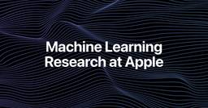
Apple Machine Learning Research https://machinelearning.apple.com
Apple machine learning teams are engaged in state of the art research in machine learning and artificial intelligence. Learn about the latest advancements.
17時間前
ScanNetSecurity https://scan.netsecurity.ne.jp/
サイバーセキュリティ専門ニュース媒体 ScanNetSecurity（スキャンネットセキュリティ）は、1998年に日本で最初に創刊されたセキュリティ専門誌です。
18時間前
CyberAgent Developers Blog | サイバーエージェント デベロッパーズブログ https://developers.cyberagent.co.jp/blog
サイバーエージェントのエンジニア・クリエイター・テクニカルクリエイターが執筆する公式ブログです。サイバーエージェントの技術情報を日々発信していきます。
18時間前
Salesforce Engineering Blog https://engineering.salesforce.com/
Read the latest articles on the Salesforce Engineering blog. Go behind the cloud with Salesforce Engineers.
18時間前
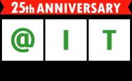
＠IT Security&Trustフォーラム 最新記事一覧 https://atmarkit.itmedia.co.jp/ait/subtop/security/
企業ネットワークセキュリティのためのノウハウ＆情報フォーラム
18時間前
https://thinkit.co.jp/ https://thinkit.co.jp/
【Think IT】“オープンソース技術の実践活用メディア” をスローガンに、インプレスグループが運営するエンジニアのための技術解説サイト。開発の現場で役立つノウハウ記事を毎日公開しています。
19時間前
Zennのトレンド https://zenn.dev
Zennはエンジニアが技術・開発についての知見をシェアする場所です。本の販売や、読者からのバッジの受付により対価を受け取ることができます。
20時間前
セキュリティ － TechTargetジャパン 最新記事一覧 https://techtarget.itmedia.co.jp/tt/security/
セキュリティは、エンドポイントセキュリティやネットワークセキュリティなど、セキュリティ関連のIT製品・サービスの選定と導入を支援するメディアです。企業のIT部門担当者向けにセキュリティ製品の比較や導入事例、技術情報などの記事を掲載します。
21時間前
Grafana Labs blog on Grafana Labs https://grafana.com/blog/
News, announcements, articles, metrics & monitoring love...
21時間前
Microsoft for Developers https://devblogs.microsoft.com/
Microsoft for Developers - Get the latest information, insights, and news from Microsoft.
1日前
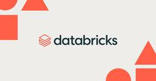
Databricks https://www.databricks.com
Databricks offers a unified platform for data, analytics and AI. Build better AI with a data-centric approach. Simplify ETL, data warehousing, governance and AI on the Data Intelligence Platform.
1日前
The Cloudflare Blog https://blog.cloudflare.com/
Technical deep dives, product updates, and insights from the teams that are helping to build a better Internet.
1日前
Microsoft Azure Blog https://azure.microsoft.com/en-us/blog/
Azure helps you build, run, and manage your applications. Get the latest news, updates, and announcements here from experts at the Microsoft Azure Blog.
1日前

Publickey https://www.publickey1.jp/
Enterprise ITに軸足を置き、新たにIT業界を変えつつあるクラウドコンピューティングやHTML5など最新の話題を、ブロガー独自の分析を交え、充実した記事で紹介するブログです。毎日更新しています。
1日前
Security Advisory for Python packages hosted at PyPI.org https://github.com/advisories?query=type%3Areviewed+ecosystem%3Apip
A database of software vulnerabilities, using data from maintainer-submitted advisories and from other vulnerability databases.
1日前
NVIDIA Technical Blog https://developer.nvidia.com/blog
News and tutorials for developers, scientists, and IT admins
1日前
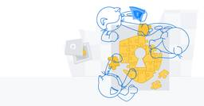
The latest security news for developers - The GitHub Blog
https://github.blog/security/
The latest security news from GitHub, including security-related product updates.
1日前
Microsoft Security Blog https://www.microsoft.com/en-us/security/blog/
Read the latest news and posts and get helpful insights about Home Page from Microsoft’s team of experts at Microsoft Security Blog.
1日前

InfoQ - ニュース https://www.infoq.com/jp
プロのソフトウェアエンジニアが執筆。世界中で150万人以上の開発者が愛読。開発チームに最新のテクノロジーと事例をお届け。
1日前
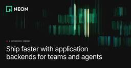
Blog — Neon Docs https://neon.com
The backend for apps and agents. Build with Serverless Postgres, Auth, Functions, Storage, and an AI Gateway: instant, branchable, serverless.
1日前
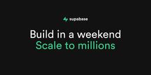
Supabase Blog https://supabase.com
Build production-grade applications with a Postgres database, Authentication, instant APIs, Realtime, Functions, Storage and Vector embeddings. Start for free.
1日前

LINEヤフー Tech Blog (LY Corporation Tech Blog https://techblog.lycorp.co.jp
LINEヤフー株式会社のサービスを支える、技術・開発文化を発信しています。
2日前

Hugging Face - Blog https://huggingface.co/blog
We’re on a journey to advance and democratize artificial intelligence through open source and open science.
2日前
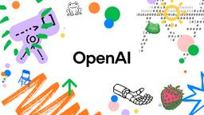
OpenAI News https://openai.com/news
Stay up to speed on the rapid advancement of AI technology and the benefits it offers to humanity.
2日前
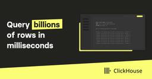
ClickHouse Blog https://clickhouse.com/blog
Learn about the latest ClickHouse tips, tricks and company announcements.
2日前


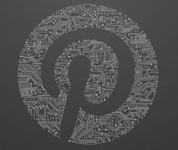
Pinterest Engineering Blog - Medium https://medium.com/pinterest-engineering?source=rss----4c5a5f6279b6---4
Inventive engineers building the first visual discovery engine, 300 billion ideas and counting.
2日前

Google DeepMind News https://deepmind.google/blog/
Discover our latest AI breakthroughs, projects, and updates.
2日前
Docker https://www.docker.com
Docker is a platform designed to help developers build, share, and run container applications. We handle the tedious setup, so you can focus on the code.
2日前
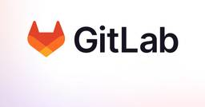
GitLab https://about.gitlab.com/blog
Tutorials, product information, expert insights, and more from GitLab to help DevSecOps teams build, test, and deploy secure software faster.
3日前
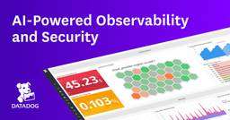
Datadog | Engineering blog https://www.datadoghq.com/
See metrics from all of your apps, tools & services in one place with Datadog’s cloud monitoring as a service solution. Try it for free.
3日前
DuckDB https://duckdb.org/
DuckDB is an in-process SQL OLAP database management system. Simple, feature-rich, fast & open source.
3日前
Redis Blog https://redis.io/en/blog
The latest on what's happening at Redis, from company news, and product announcements to tips, tricks, and how-to information for database developers.
3日前
IPAセキュリティセンター:重要なセキュリティ情報 https://www.ipa.go.jp/index.html
独立行政法人情報処理推進機構（IPA）は経済産業省のIT政策実施機関です。多彩な施策でデータとデジタルの時代を牽引し、安全で信頼できるIT社会を実現します。
3日前
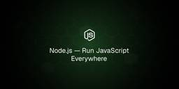
Node.js Blog https://nodejs.org/en
Node.js® is a free, open-source, cross-platform JavaScript runtime environment that lets developers create servers, web apps, command line tools and scripts.
4日前
Stripe Blog https://stripe.com/blog
Follow the Stripe blog to learn about new product features, the latest in technology, payment solutions, and business initiatives.
4日前
RedditEng https://www.reddit.com/r/RedditEng/
Welcome to the Reddit Tech Blog. We'll be talking about how we contribute to Reddit's mission to empower communities and make their knowledge accessible to everyone. Read about how we build stuff peop...
4日前

Spotify Engineering https://engineering.atspotify.com/
Our R&D teams tell the stories behind how we build at Spotify. AI, mobile, web, data science, experimentation, developer tools, design, open source, and more.
4日前
piyolog https://piyolog.hatenadiary.jp/
piyokangoの備忘録です。セキュリティの出来事を中心にまとめています。このサイトはGoogle Analyticsを利用しています。
5日前
Netflix TechBlog - Medium https://netflixtechblog.com?source=rss----2615bd06b42e---4
Learn about Netflix’s world class engineering efforts, company culture, product developments and more.
7日前
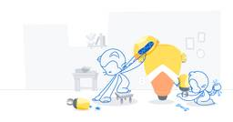
The latest from GitHub's engineering team - The GitHub Blog https://github.blog/engineering/
See what the GitHub Engineering team is up to—from building features to solving the nagging challenges teams face as they grow.
7日前
Yelp Engineering and Product Blog https://engineeringblog.yelp.com/
Migrating from Apollo Tooling to GraphQL Codegen at Yelp Igor Kusakov, Software Engineer Jul 16, 2026 Introduction At Yelp, we rely heavily on GraphQL and Apollo for data loading in...
9日前
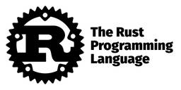
Rust Blog https://blog.rust-lang.org/
Empowering everyone to build reliable and efficient software.
9日前

MIXI DEVELOPERS - Medium https://mixi-developers.mixi.co.jp?source=rss----bc6b0ae5a97c---4
株式会社MIXIに所属の開発者による技術知見や開発ノウハウ、カンファレンスレポートなど、開発に関する情報を共有するエンジニア・ブログです。
9日前
Kubernetes Blog https://kubernetes.io/
Kubernetes, also known as K8s, is an open source system for automating deployment, scaling, and management of containerized applications. It groups containers that make up an application into logical ...
10日前
tech-at-instacart - Medium https://tech.instacart.com?source=rss----587883b5d2ee---4
Instacart Engineering
10日前
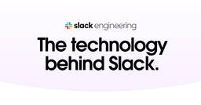
Engineering at Slack https://slack.engineering
A deep dive into the technology behind building Slack. Written by engineers, for engineers passionate about solving complex technical problems.
10日前


DeNA Engineering on DeNA Engineering https://engineering.dena.com/
DeNA Engineering は、DeNAのエンジニアの技術・文化・チーム等を伝えるポータルサイトです。
10日前
Microsoft Research https://www.microsoft.com/en-us/research/
Explore research at Microsoft, a site featuring the impact of research along with publications, products, downloads, and research careers.
11日前
The Trail of Bits Blog https://blog.trailofbits.com/
Since 2012, Trail of Bits has helped secure some of the world's most targeted organizations and products. We combine high-end security research with a real world attacker mentality to reduce risk an...
11日前
Blog RSS Feed | Snyk https://snyk.io
Snyk is the AI Security Fabric — the independent validator that makes AI-generated code, AI agents, and AI-native applications trustworthy. Unleash AI innovation securely.
16日前
Discord Blog https://discord.com
Discord is great for playing games and chilling with friends, or even building a worldwide community. Customize your own space to talk, play, and hang out.
18日前

Nulab (Japanese) https://nulab.com/ja/
数百万人ものユーザーがヌーラボのサービスを使用して、チームのコミュニケーションを改善しています。ヌーラボのオンラインコラボレーションツールで、あなたのチームの仕事をもっと楽しくしましょう。
22日前
MongoDB | Blog https://www.mongodb.com/blog
MongoDB's blog includes technical tutorials, MongoDB best practices, customer stories, and industry news related to the leading non-relational database.
1ヶ月前

Google Developers Japan http://developers-jp.googleblog.com/
Google から開発者のみなさま向けの情報をいち早くお届けするブログです。
1ヶ月前
Mozilla Hacks – the Web developer blog https://hacks.mozilla.org/
Mozilla Hacks is written for web developers, designers and everyone who builds for the Web. Hacks is produced by Mozilla's Developer Relations team and features hundreds of posts from Mozilla ...
1ヶ月前

developer.chrome.com: Blog https://developer.chrome.com/blog/
Latest news from the Chrome Developer Relations team
1ヶ月前
Security Advisory for Github Actions https://github.com/advisories?query=type%3Areviewed+ecosystem%3Aactions
A database of software vulnerabilities, using data from maintainer-submitted advisories and from other vulnerability databases.
1ヶ月前
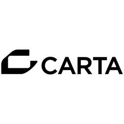
CARTA TECH BLOG https://techblog.cartaholdings.co.jp/
CARTA HOLDINGS公式エンジニアブログです。CARTA HOLDINGSのエンジニアリング関連の情報、 イベント, エンジニアたちの様子などを投稿しています。
1ヶ月前


Featured Decks - Speaker Deck https://speakerdeck.com
Speaker Deck is the best way to share presentations online. Simply upload your slides as a PDF, and we’ll turn them into a beautiful online experience. View them on SpeakerDeck.com, or share them on a...
2ヶ月前

React Blog https://react.dev/
React is the library for web and native user interfaces. Build user interfaces out of individual pieces called components written in JavaScript. React is designed to let you seamlessly combine compone...
5ヶ月前
徳丸浩の日記 https://blog.tokumaru.org/
[PR]<a href="https://en-gage.net/eg-secure_career/">EGセキュアソリューションズ株式会社はエンジニアを募集しています</a>
2年前
Elastic Blog - Elasticsearch, Kibana, and ELK Stack https://www.elastic.co
Power insights and outcomes with The Elasticsearch Platform. See into your data and find answers that matter with enterprise solutions designed to help you accelerate time to insight. Try Elastic toda...
2年前
Qdrant Articles on Qdrant - Vector Search Engine https://qdrant.tech/articles/
Articles about vector search and similarity larning related topics. Latest updates on Qdrant vector search engine.
2年前
Qdrant - Vector Search Engine https://qdrant.tech/
Qdrant is an Open-Source Vector Search Engine written in Rust. It provides fast and scalable vector similarity search service with convenient API.
2年前

DSAS開発者の部屋 http://dsas.blog.klab.org/
DSASとはKLab(株)が構築し運用しているコンテンツサービス用のプラットフォームです。Linuxベースのクラスタリングシステムで、高い信頼性、可用性、柔軟性を備え低コストで運用できるのが特徴です
5年前
TECHSCORE BLOG https://www.techscore.com/blog
TECHSCORE BLOG は,シナジーマーケティング株式会社のエンジニアが運営するブログサイトです。エンジニアが情報収集をするために押さえておきたいWebサイトになれるよう頑張ります！ぜひ、チェックしてみてください。
6年前